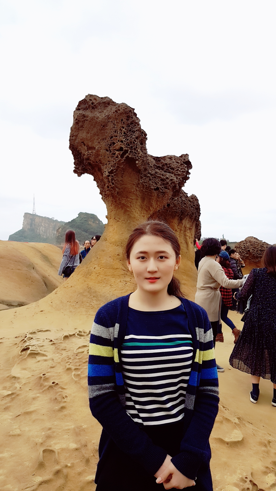

이후 건강하게 자라다가 여러 유치원을 다녔다. 곰두리를 다닌것이 기초적인 운동신경에 도움은 된것같지만 지금은 체력이 바닥이라 운동을 전체적으로 못하는것 같다. 그 후 남천초등학교에 입학하였고, 중학교는 오주중학교를 졸업했다. 잠실여고에 진학한 후 공부에 매진하였고 그 결과 지금 고려대학교 수학과에 재학중이다.
이 사진은 대만여행을 갔을 때 예류지질공원에서 찍은 사진이다. 대만여행은 좋았고 또 여행을 간다면 가이드 없이 더 많은곳을 둘러보고 오고싶다.